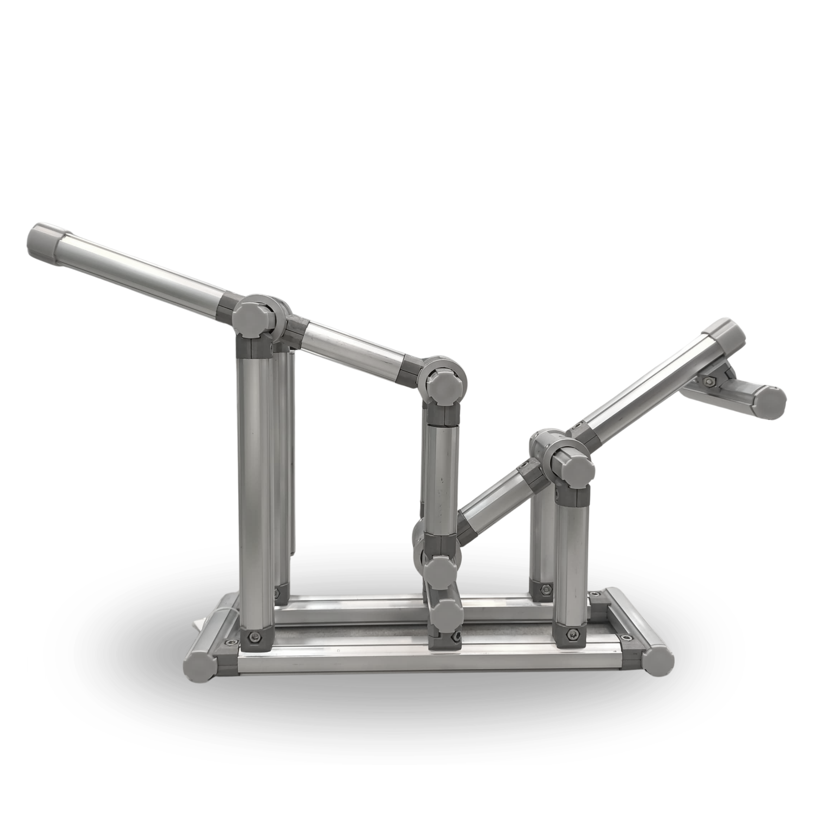

See-Saw Karakuri
The see-saw mechanism is based on the concept of a lever, where force applied on one side causes an opposite movement on the other. In Karakuri, this design allows weight-based triggers or passive balancing actions to initiate motion.
Its simplicity makes it an excellent choice for energy-free actuation in manual processes. By distributing forces through a single pivot point, the see-saw helps conserve energy while producing reliable motion responses.
Launch AR